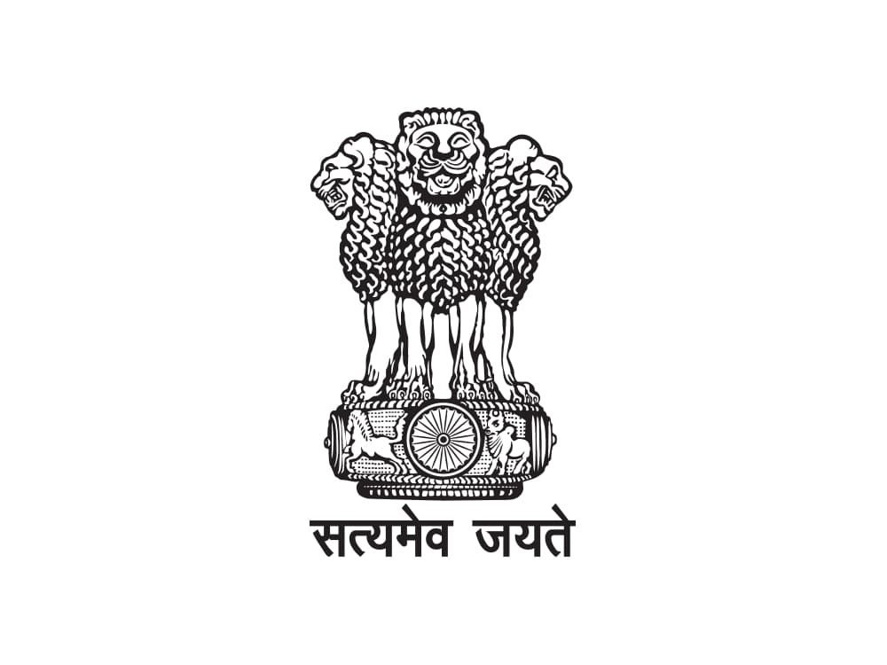
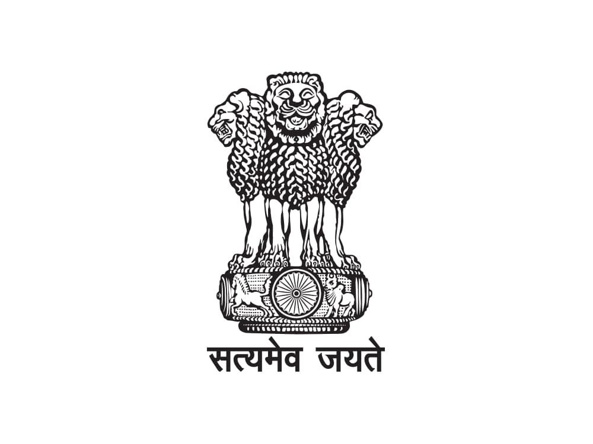

For more than 150 years, the Department of Posts (DoP) has been the backbone of the country’s communication and has played a crucial role in the country’s social economic development. It touches the lives of Indian citizens in many ways: delivering mails, accepting deposits under Small Savings Schemes, providing life insurance cover under Postal Life Insurance (PLI) and Rural Postal Life Insurance (RPLI) and providing retail services like bill collection, sale of forms, etc. The DoP also acts as an agent for Government of India in discharging other services for citizens such as Mahatma Gandhi National Rural Employment Guarantee Scheme (MGNREGS) wage disbursement and old age pension payments. With more than 1,55,000 post offices, the DoP has the most widely distributed postal network in the world.
India Post's products and services will be the customer's first choice
| Designation | Name | Room No | Direct | Fax No | Email Address |
|---|---|---|---|---|---|
| Cabinet Minister | Shri Ashwini Vaishnaw | 105, 1st floor, Sanchar Bhawan | 911123739191 911123372177 |
911123723330 | moc-office@gov.in |
| Private Secretary | Dr. Mahatme Sandeep Namdeo | 109, 1st Floor, Sanchar Bhawan | 911123739191 911123372177 |
911123723330 | moc-office@gov.in |
| Dy.Director General | Shri Abhishek Kumar Singh | 109, 1st Floor, Sanchar Bhawan | 911123739191 911123372177 |
911123723330 | moc-office@gov.in |
| Director | Sh.Neeraj Mehrotra | 109, 1st Floor, Sanchar Bhawan | 911123739191 911123372177 |
911123723330 | moc-office@gov.in |
| Designation | Name | Direct | Fax No | Email Address |
|---|---|---|---|---|
| Hon'ble Minister | Shri Devusinh Chauhan | 911123372414 | 911123372414 | mosc-office@gov.in |
| Additional Private Secretary | Shri Jayesh N Raval | 911123096270 91113372414 | 91113372414 | jayeshraval40@gov.in |
| Assistant Private Secretary | Shri Rahul Ghosh | 911123096270 911123372414 | 911123096270 | rahul.ghosh1504@gov.in |